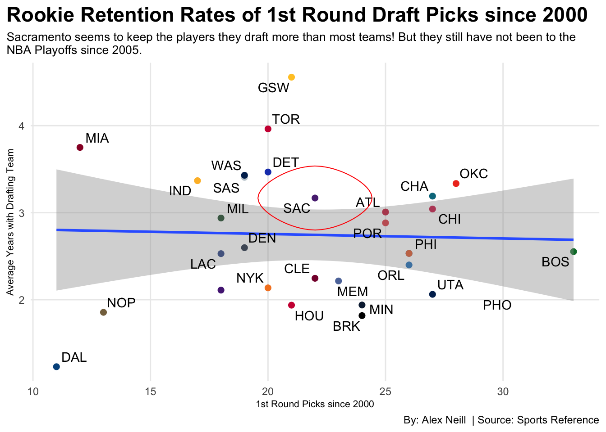

Code
library(tidyverse)
library(ggplot2)
library(ggrepel)
library(ggalt)
NBAdraft<- read_csv("draft-data-20-years.csv")
`FirstRound00-03` <- NBAdraft %>%
filter(
DraftYear >1999,
DraftYear <2004,
Rk <30) %>%
group_by(Tm) %>%
summarise(
FirstRoundPicks = n(),
CareerLongevity = sum(Yrs[which(is.na(Yrs)==FALSE)]))
`FirstRound04-22` <- NBAdraft %>%
filter(
DraftYear >2003,
Rk <31) %>%
group_by(Tm)%>%
summarise(
FirstRoundPicks = n(),
CareerLongevity = sum(Yrs[which(is.na(Yrs)==FALSE)]))
FirstRoundSince2010 <- NBAdraft %>%
filter(
DraftYear >2009,
Rk <31) %>%
group_by(Tm)%>%
summarise(
FirstRoundPicks = n(),
CareerLongevity = sum(Yrs[which(is.na(Yrs)==FALSE)]))
NBA2DecadesDraftingAllData<-bind_rows(`FirstRound00-03`,`FirstRound04-22`) %>%
group_by(Tm)%>%
summarise(
TotalPicks = sum(FirstRoundPicks),
CareerTotal = sum(CareerLongevity)) %>%
mutate(
AvgCareerPerTeam = (CareerTotal/TotalPicks)
)
AtlPicks<- NBA2DecadesDraftingAllData %>%
filter(Tm == "ATL") %>%
mutate(
AverageTenure = 3.00772)
BosPicks<- NBA2DecadesDraftingAllData %>%
filter(Tm == "BOS") %>%
mutate(
AverageTenure =2.552697)
BrkPicks<- NBA2DecadesDraftingAllData %>%
filter(Tm == "BRK") %>%
mutate(
AverageTenure =1.817458)
ChaPicks<- NBA2DecadesDraftingAllData %>%
filter(Tm == "CHA") %>%
mutate(
AverageTenure =3.190519)
ChiPicks<- NBA2DecadesDraftingAllData %>%
filter(Tm == "CHI") %>%
mutate(
AverageTenure =3.042333)
ClePicks<- NBA2DecadesDraftingAllData %>%
filter(Tm == "CLE") %>%
mutate(
AverageTenure = 2.246556)
DalPicks<- NBA2DecadesDraftingAllData %>%
filter(Tm == "DAL") %>%
mutate(
AverageTenure = 1.230455)
DenPicks<- NBA2DecadesDraftingAllData %>%
filter(Tm == "DEN") %>%
mutate(
AverageTenure =2.598053)
DetPicks<- NBA2DecadesDraftingAllData %>%
filter(Tm == "DET") %>%
mutate(
AverageTenure =3.46752)
GswPicks<- NBA2DecadesDraftingAllData %>%
filter(Tm == "GSW") %>%
mutate(
AverageTenure =4.55719)
HouPicks<- NBA2DecadesDraftingAllData %>%
filter(Tm == "HOU") %>%
mutate(
AverageTenure =1.937762)
IndPicks<- NBA2DecadesDraftingAllData %>%
filter(Tm == "IND") %>%
mutate(
AverageTenure =3.367941)
LacPicks<- NBA2DecadesDraftingAllData %>%
filter(Tm == "LAC") %>%
mutate(
AverageTenure =2.529611)
LalPicks<- NBA2DecadesDraftingAllData %>%
filter(Tm == "LAL") %>%
mutate(
AverageTenure =2.110389)
MemPicks<- NBA2DecadesDraftingAllData %>%
filter(Tm == "MEM") %>%
mutate(
AverageTenure =2.215652)
MiaPicks<- NBA2DecadesDraftingAllData %>%
filter(Tm == "MIA") %>%
mutate(
AverageTenure =3.75)
MilPicks<- NBA2DecadesDraftingAllData %>%
filter(Tm == "MIL") %>%
mutate(
AverageTenure =2.938944)
MinPicks<- NBA2DecadesDraftingAllData %>%
filter(Tm == "MIN") %>%
mutate(
AverageTenure =1.9395)
NopPicks<- NBA2DecadesDraftingAllData %>%
filter(Tm == "NOP") %>%
mutate(
AverageTenure =1.855462)
NykPicks<- NBA2DecadesDraftingAllData %>%
filter(Tm == "NYK") %>%
mutate(
AverageTenure =2.1364)
OkcPicks<- NBA2DecadesDraftingAllData %>%
filter(Tm == "OKC") %>%
mutate(
AverageTenure =3.335286)
OrlPicks<- NBA2DecadesDraftingAllData %>%
filter(Tm == "ORL") %>%
mutate(
AverageTenure =2.399538)
PhiPicks<- NBA2DecadesDraftingAllData %>%
filter(Tm == "PHI") %>%
mutate(
AverageTenure =2.532308)
PhoPicks<- NBA2DecadesDraftingAllData %>%
filter(Tm == "PHO") %>%
mutate(
AverageTenure =2.057483)
PorPicks<- NBA2DecadesDraftingAllData %>%
filter(Tm == "POR") %>%
mutate(
AverageTenure =2.88288)
SacPicks<- NBA2DecadesDraftingAllData %>%
filter(Tm == "SAC") %>%
mutate(
AverageTenure =3.168773)
SasPicks<- NBA2DecadesDraftingAllData %>%
filter(Tm == "SAS") %>%
mutate(
AverageTenure =3.406211)
TorPicks<- NBA2DecadesDraftingAllData %>%
filter(Tm == "TOR") %>%
mutate(
AverageTenure =3.96265)
UtaPicks<- NBA2DecadesDraftingAllData %>%
filter(Tm == "UTA") %>%
mutate(
AverageTenure =2.062222)
WasPicks<- NBA2DecadesDraftingAllData %>%
filter(Tm == "WAS") %>%
mutate(
AverageTenure =3.429947)
PicksRetention<-
rbind(AtlPicks,BosPicks,BrkPicks,ChaPicks,ChiPicks,ClePicks,DalPicks,DenPicks,
DetPicks,GswPicks,HouPicks,IndPicks,LacPicks,MemPicks,MiaPicks,MilPicks,
MinPicks,NopPicks,NykPicks,OkcPicks,OrlPicks,PhiPicks,PhoPicks,PorPicks,
SacPicks,SasPicks,TorPicks,UtaPicks,WasPicks)
ggplot() +
geom_point(data=AtlPicks, aes(x=TotalPicks, y=AverageTenure),size = 2,color="#C8102E")+
geom_point(data=BosPicks, aes(x=TotalPicks, y=AverageTenure),size = 2, color="#007A33")+
geom_point(data=BrkPicks, aes(x=TotalPicks, y=AverageTenure),size = 2, color="#000000")+
geom_point(data=ChaPicks, aes(x=TotalPicks, y=AverageTenure),size = 2, color="#00788C")+
geom_point(data=ClePicks, aes(x=TotalPicks, y=AverageTenure),size = 2, color="#860038")+
geom_point(data=ChiPicks, aes(x=TotalPicks, y=AverageTenure),size = 2, color="#CE1141")+
geom_point(data=DalPicks, aes(x=TotalPicks, y=AverageTenure),size = 2, color="#00538C")+
geom_point(data=DenPicks, aes(x=TotalPicks, y=AverageTenure),size = 2, color="#0E2240")+
geom_point(data=DetPicks, aes(x=TotalPicks, y=AverageTenure),size = 2, color="#1D42BA")+
geom_point(data=GswPicks, aes(x=TotalPicks, y=AverageTenure),size = 2, color="#FFC72C")+
geom_point(data=HouPicks, aes(x=TotalPicks, y=AverageTenure),size = 2, color="#CE1141")+
geom_point(data=IndPicks, aes(x=TotalPicks, y=AverageTenure),size = 2, color="#FDBB30")+
geom_point(data=LacPicks, aes(x=TotalPicks, y=AverageTenure),size = 2, color="#1D428A")+
geom_point(data=LalPicks, aes(x=TotalPicks, y=AverageTenure),size = 2, color="#552583")+
geom_point(data=MemPicks, aes(x=TotalPicks, y=AverageTenure),size = 2, color="#5D76A9")+
geom_point(data=MiaPicks, aes(x=TotalPicks, y=AverageTenure),size = 2, color="#98002E")+
geom_point(data=MilPicks, aes(x=TotalPicks, y=AverageTenure),size = 2, color="#00471B")+
geom_point(data=MinPicks, aes(x=TotalPicks, y=AverageTenure),size = 2, color="#0C2340")+
geom_point(data=NopPicks, aes(x=TotalPicks, y=AverageTenure),size = 2, color="#85714D")+
geom_point(data=NykPicks, aes(x=TotalPicks, y=AverageTenure),size = 2, color="#F58426")+
geom_point(data=OkcPicks, aes(x=TotalPicks, y=AverageTenure),size = 2, color="#EF3B24")+
geom_point(data=OrlPicks, aes(x=TotalPicks, y=AverageTenure),size = 2, color="#0077C0")+
geom_point(data=PhiPicks, aes(x=TotalPicks, y=AverageTenure),size = 2, color="#006BB6")+
geom_point(data=PhiPicks, aes(x=TotalPicks, y=AverageTenure),size = 2, color="#E56020")+
geom_point(data=PorPicks, aes(x=TotalPicks, y=AverageTenure), size = 2,color="#E03A3E")+
geom_point(data=SacPicks, aes(x=TotalPicks, y=AverageTenure),size = 2, color="#5A2D81")+
geom_point(data=SasPicks, aes(x=TotalPicks, y=AverageTenure),size = 2, color="#C4CED4")+
geom_point(data=TorPicks, aes(x=TotalPicks, y=AverageTenure),size = 2, color="#CE1141")+
geom_point(data=UtaPicks, aes(x=TotalPicks, y=AverageTenure),size = 2, color="#002B5C")+
geom_point(data=WasPicks, aes(x=TotalPicks, y=AverageTenure),size = 2, color="#002B5C")+
geom_smooth(data=PicksRetention, aes(x=TotalPicks, y=AverageTenure), method=lm)+
geom_text_repel(
data=PicksRetention, aes(x=TotalPicks, y=AverageTenure, label=Tm))+
geom_encircle(data=SacPicks, aes(x=TotalPicks, y=AverageTenure), s_shape=0.05, expand=.0005, colour="red")+
labs(
x="1st Round Picks since 2000",
y="Average Career with Drafting Team",
title="Rookie Retention Rates of NBA 1st Round Draft Picks since 2000",
subtitle="Sacramento seems to keep the players they draft more than most teams!\nBut they still have not been to the NBA Playoffs since 2005.",
caption="By: Alex Neill | Source: Sports Reference") +
theme_minimal()+
theme(
plot.title = element_text(size = 20, face = "bold"),
axis.title = element_text(size = 8),
plot.subtitle = element_text(size=10),
panel.grid.minor = element_blank(),
plot.title.position = "plot"
)